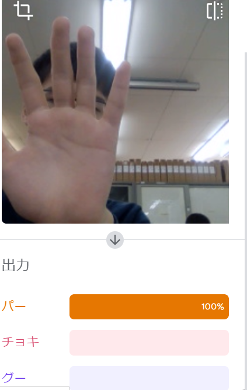
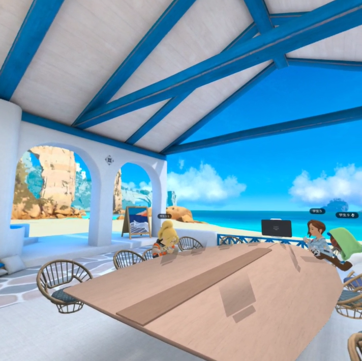

第2週目
2-1 １週目のレポートをHTMLで作る
１週目のレポート
1.内容
githubのrep01のファイルを使ってレポート作成を行った
2.感想
初めてのレポートの書き方でとても混乱した。
2-2 機械学習体験

1.内容
手のグーチョキパーのデータを機械に学習させて、機械にグーチョキパーの判別が出来るようにした
2.感想
多くのデータを記憶させたものの、判別を手の形ではなく位置で判別していた。 もっと多くのパターンのデータを読み込ませればしっかりと判別が出来るのかなと思った
2-3 VR（バーチャルリアリティー：Virtual Reality）会議室の体験

1.内容
VRゴーグルを使ってバーチャル空間の中に入って、ホワイトボードを使うなどして遊んだs。
2.感想
初めてのバーチャル空間だったが、人の首がおかしくなるなど、所々バグが起きていて面白かった